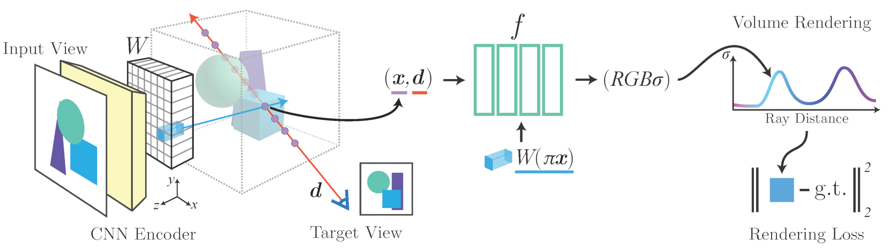

pixelNeRF
Neural Radiance Fields from One or Few Images
UC Berkeley

We propose pixelNeRF, a learning framework that predicts a continuous neural scene representation conditioned on one or few input images. The existing approach for constructing neural radiance fields [Mildenhall et al. 2020] involves optimizing the representation to every scene independently, requiring many calibrated views and significant compute time. We take a step towards resolving these shortcomings by introducing an architecture that conditions a NeRF on image inputs in a fully convolutional manner. This allows the network to be trained across multiple scenes to learn a scene prior, enabling it to perform novel view synthesis in a feed-forward manner from a sparse set of views (as few as one).
Narrated Overview
Leveraging the volume rendering approach of NeRF, our model can be trained directly from images with no explicit 3D supervision. We conduct extensive experiments on ShapeNet benchmarks for single image novel view synthesis tasks with held-out objects as well as entire unseen categories. We further demonstrate the flexibility of pixelNeRF by demonstrating it on multi-object ShapeNet scenes and real scenes from the DTU dataset. In all cases, pixelNeRF outperforms current state-of-the-art baselines for novel view synthesis and single image 3D reconstruction.
Feed-forward NeRF from One View
Using multiview image supervision, we train a single pixelNeRF to 13 largest object categories in ShapeNet in order to perform novel-view synthesis on unseen objects. Our approach operates in view-space—as opposed to canonical—and requires no test-time optimization. Nevertheless, in terms of image metrics, we significantly outperform existing methods quantitatively, as shown in the paper.
Scene-level Representation
Since our method requires neither canonical space nor object-level information such as masks, it can represent scenes with multiple objects, where a canonical space is unavailable, without modification. Our method can also seemlessly integrate multiple views at test-time to obtain better results. SRN performs extremely poorly here due to the lack of a consistent canonical space.
Real-world Scenes
We show that our method can also conduct wide-baseline view synthesis on more complex real scenes from the DTU MVS dataset, producing reasonable results when given only 1-3 views at inference time. Moreover, it is feed-forward without requiring test-time optimization for each scene.

Generalization
To demonstrate generalization capabilities, we apply a model trained on ShapeNet planes, cars, and chairs to unseen ShapeNet categories.
Separately, we apply a pretrained model on real car images after background removal.
Related Links
- NeRF was introduced in Mildenhall et al. (2020)
- Local image features were used in the related regime of implicit surfaces in Saito et al. (2019) and Xu et al. (2019)
- Our MLP architecture is inspired by DVR
- Parts of our PyTorch NeRF implementation are taken from kwea123
- Also see the concurrent work GRF which also introduces image features for NeRF, showing image features can even improve NeRF when a large number of views are available.
Bibtex
Acknowledgements
We thank Shubham Goel and Hang Gao for comments on the text. We also thank Emilien Dupont and Vincent Sitzmann for helpful discussions. This website is inspired by the template of Michaël Gharbi.
Please send any questions or comments to Alex Yu.